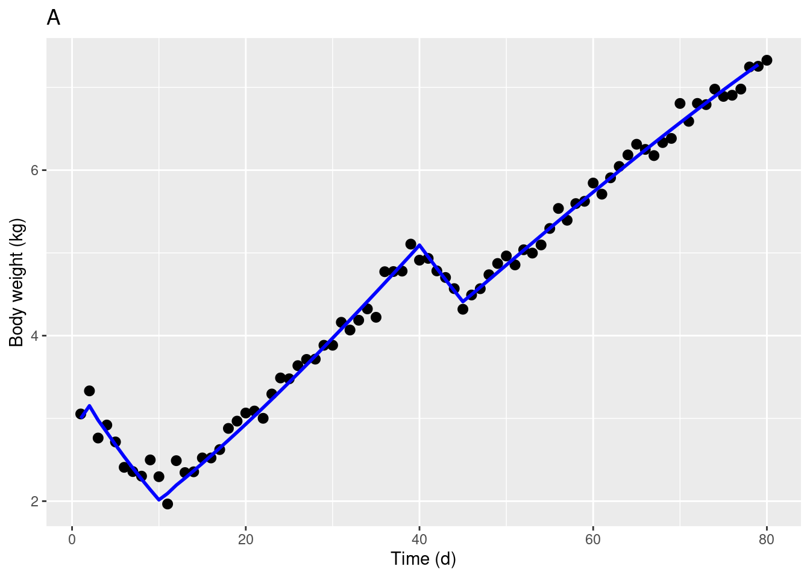
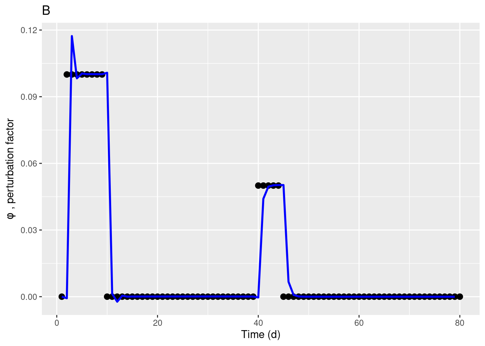

knitr::opts_chunk$set(message = FALSE)
library("deSolve")
library(ggplot2)
library(ggExtra)
library(gridExtra)
# Loading the measured noisy data [time (d) animal body weight (kg)]
ynoise <- read.table("ynoise.txt");
DN <- data.frame(ynoise);
colnames(DN)<- c("time","BW");
tN <- DN$time
yN <- DN$BW
# Loading the measured filtered data [time (d) animal body weight (kg)]
ysmooth <- read.table("ysmooth.txt");
DS <- data.frame(ysmooth);
colnames(DS)<- c("time","BW");
tS <- DS$time
yS <- DS$BW
# Loading the perturbation factor used to generate the simulated data
perturbfactor<- read.table("perturbfactor.txt");
DP <- data.frame(perturbfactor);
colnames(DP)<- c("time","Fi");
tP <- DP$time
yP <- DP$FiExample of an state observer to estimate the perturbed component of the body weight trajectory
Case study 3. Known theoretical trajectory.
In this example, we show the use of state observers to quantify dynamic perturbations. An observer is an object that combines a mathematical model and on-line data to estimate unmeasured variables
# Dynamic model
tspan=tS;
dy<- function(t, state,parameters) { #ODE function observer
with(as.list(c(state,parameters)), {
# model parameters
# p1 = 0.05
# p2 = 0.02
# observer parameters
#w1 = 4.0
#w2 = 0.5
#ysmooth <- read.table("ysmooth.txt");
#DS <- data.frame(ysmooth);
#colnames(DS)<- c("time","BW");
#tS <- DS$time
#yS <- DS$BW
ydata = approx(tS, yS, xout = t)$y # interpolation
dy1=-ydata*y2 + ydata*p1*exp(-p2*t) + w1*(ydata-y1)
dy2=-w2*y1*w1*(ydata-y1)
# return the result
list(c(dy1,dy2))
}) # end with(as.list ...
}
state <- c(y1 = 3,y2=0) #initial conditions
parameters <- c(p1 = 0.05, p2 = 0.02, w1 = 4.0, w2 = 0.5)
yout= ode(y = state, times = tspan, func = dy,parms = parameters) # solving the ODE
Dout <- data.frame(yout);
colnames(Dout)<- c("time","BWobs","Fiobs");
tout <- Dout$time # Time
y1 <- Dout$BWobs # Estimated body weight
y2 <- Dout$Fiobs # Unknown perturbation function ggplot(DN, aes(tN, yN)) + geom_point(colour = 'black', size = 2.5) + labs(title="A", x="Time (d)", y= "Body weight (kg)") +
geom_line(data = Dout, aes(tout,y1), size = 1, linetype = 1, colour = "blue") Warning: Using `size` aesthetic for lines was deprecated in ggplot2 3.4.0.
ℹ Please use `linewidth` instead.Warning: Removed 1 row containing missing values (`geom_line()`).
ggplot(DP, aes(tP, yP)) + geom_point(colour = 'black', size = 2.5) + labs(title="B", x="Time (d)", y=expression(phi~ ", perturbation factor")) +
geom_line(data = Dout, aes(tout,y2), size = 1, linetype = 1, colour = "blue" )Warning: Removed 1 row containing missing values (`geom_line()`).